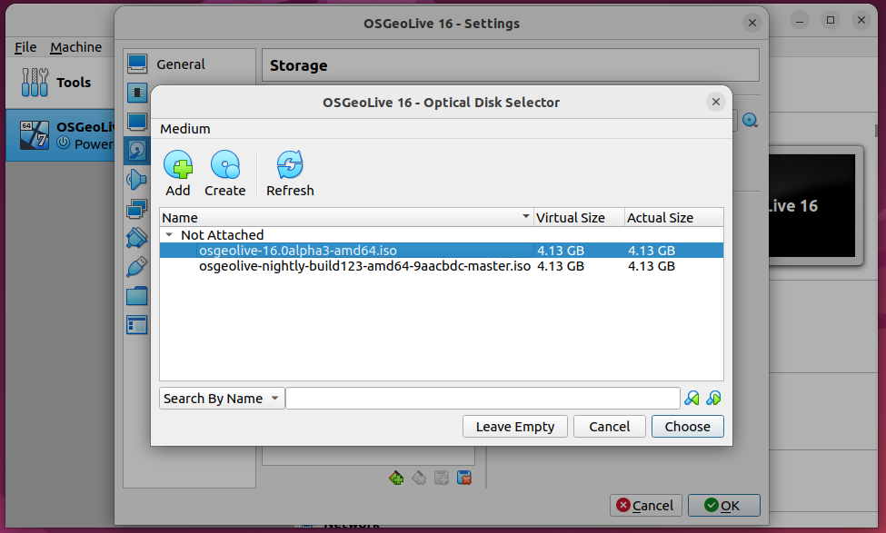

2. OSGeoLive Installation¶
All required tools are available on OSGeoLive.
Importante
Before attending a workshop event, make sure your you can use OSGeoLive with either method or Apéndice: Instalación on your computer.
This workshop uses OSGeoLive on VirtualBox.
2.1. Install VirtualBox.¶
This is a general description on how to install VirtualBox. Complete details about installation can be found on the VirtualBox documentation.
Linux distributions:
Add the following line to your /etc/apt/sources.list. According to your distribution, replace <mydist> with your distribution name.
deb https://download.virtualbox.org/virtualbox/debian <mydist> contrib
Add the keys:
wget -q https://www.virtualbox.org/download/oracle_vbox_2016.asc -O- | sudo apt-key add -
wget -q https://www.virtualbox.org/download/oracle_vbox.asc -O- | sudo apt-key add -
Install Virtual box using:
sudo apt-get update
sudo apt-get install virtualbox-6.1
More detailed and up to date information can be found here
2.2. OSGeoLive on a VirtualBox¶
2.2.1. Download OSGeoLive 17¶
This installation method corresponds for the iso distribution of OSGeoLive.
For other installations visit OSgeoLive
Nota
The images on this section might not correspond to the VirtualBox or OSGeoLive version installed on your system, but the workflow is similar.
From https://download.osgeo.org/livedvd/releases/17/
Download osgeolive-17-amd64.iso
Download is saved on Downloads directory.

2.2.2. Create the virtual machine¶
Open the Virtual Box

Click on New and fill with the following information
Name OSGeoLive 17
Type Linux
Version Ubuntu (64-bit)
Memory size 4096
Hard disk Create a virtual hard disk now

Click on Create and fill with the following information
File location Choose a suitable location for the Virtual Hard Disk
File size 10.0GB
Hard disk file type VDI (VirtualBox Disk image)
Storage on physical hard disk Dynamically allocated
2.2.3. Install OSGeoLive’s ISO¶
On Storage it reads:
- Controller:
IDE
- IDE Secondary Device 0:
[Optical Drive] empty
Choose Storage from the virtual box traits and clink on Empty

Click on the small disk icon and select Choose/Create a Virtual Disk

Navigate to the location where the ISO was installed
Instead of empty, now it has the ISO installed

The installation now reads:
- Controller:
IDE
- IDE Secondary Device 0:
[Optical Drive] osgeolive-10.0alpha3-amd64.iso (4.13 GB)

2.2.4. Start OSGeoLive¶
Click on Start button, and click on capture, to capture the mouse
movements

Click on Try or Install Lubuntu

Nota
OSGeoLive’s account is user and password is user
After a few seconds OSGeoLive will start

Nota
OSGeoLive’s account is user and password is user
2.3. Ubuntu installation¶
Update sources to include postgresql
curl https://www.postgresql.org/media/keys/ACCC4CF8.asc | sudo apt-key add -
sudo sh -c 'echo "deb http://apt.postgresql.org/pub/repos/apt/ \
$(lsb_release -cs)-pgdg main" > /etc/apt/sources.list.d/pgdg.list'
Install PostgrSQL, PostGIS and pgRouting
sudo apt-get update
sudo apt-get install -y \
osm2pgrouting \
postgresql-15 \
postgresql-15-postgis-3 \
postgresql-15-postgis-3-scripts \
postgresql-15-pgrouting